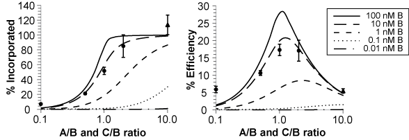
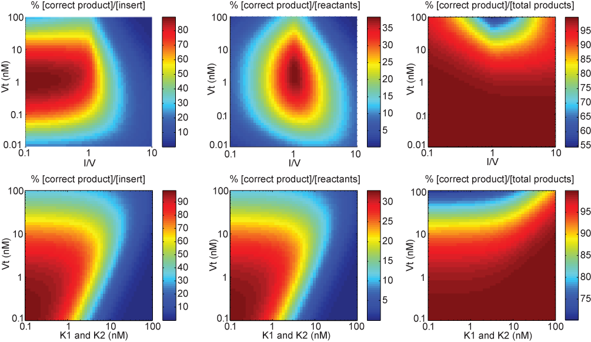

NP-Sticky: Model-Guided Ligation Calculator
Model Recommendations
We investigated model predictions for applications in which the insert is the valuable entity. For example, in in vitro directed evolution methods such as ribosome display and mRNA display, the amount of ligated insert (i.e., diversity-containing fragment) would directly influence library quality and diversity. For such applications, linear ligation is preferable to vector-insert ligation because no molecules would be lost in byproduct formation. The product could also be directly used, without the need for PCR amplification or transformation. Vector-insert ligation, on the other hand, represents the more common type of ligation, so we also investigated model predictions for this setup, again with the insert as the valuable fragment. These insights may be useful for in vivo directed evolution methods that require circular display vectors, including phage display, bacterial display, and yeast display.
Linear Ligation
Ligations were simulated and experimentally validated at different insert concentrations and across a range of reactant molar ratios with ΔG1 = -12.00 kcal/mol and ΔG2 = -12.23 kcal/mol. Percent incorporation is defined as full-length product divided by total insert added, while ligation efficiency is defined as full-length product divided by the sum of all reactants. Based on these simulation results, it is recommended that, for high incorporation of insert and maximal ligation efficiency, the two sticky end sites should be designed to have ΔG values that are as similar and as negative as possible (i.e., match the number of G/C and A/T base-pairs on the two sticky ends with no more than two A/T base-pairs per sticky end). In three-piece linear ligation reactions in which the middle piece (insert) needs to be maximally incorporated, the upstream and downstream pieces should be used in as much excess as possible.

Circular Ligation
Ligations were simulated and experimentally validated across a range of vector concentrations and insert:vector molar ratios with ΔG1 of -12.00 kcal/mol and ΔG2 of -12.23 kcal/mol. Percent incorporation is defined as circularized vector-insert product divided by total insert added, ligation efficiency is defined as circularized vector-insert product divided by the sum of the reactants, and accuracy is defined as the circularized vector-insert product divided by the sum of all circular products. Based on the results, it is recommended that for high insert incorporation, maximal ligation efficiency, and best accuracy, the insert:vector ratio should be 1 or slightly less and the vector concentration should be kept close to the K values, where K = exp(ΔG/RT).

Last modified by Daphne Ng on Jan 4th, 2014